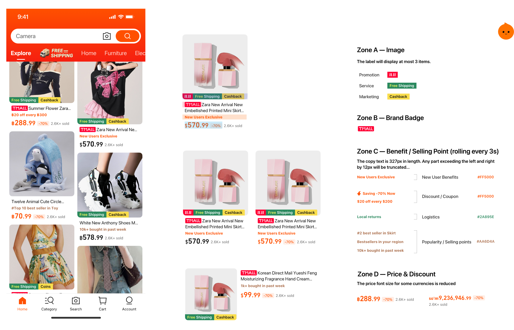

Enhancing multi-language sites of "Taobao" to increase promotion rate and trust for international users.
Timeline -
06/2025 - 10/2025
Role -
Design research
UX design
Interface design
Team -
UX Designer (3)
UI Designer (2)
Product Manager (2)
Design Leader (1)
Overview
TaoBao Overseas serves two distinct groups: overseas Chinese users already familiar with TaoBao's ecosystem, and new international users who have never experienced it. Spanning approximately 20 regional sites across 3 languages, the platform sits at a pivotal inflection point.
The core tension: new business capabilities had no suitable design container to operate in. My mandate was to systematically redesign three foundational modules — product cards, topic feeds, and the detail page — to increase L-to-P (landing-to-purchase) conversion rates across the full user journey.
Final Impact
Increase in overall L-P Rate
Product detail and personalized signals at key decision points reduced drop-off and drove a measurable lift in listing-to-purchase conversion across target categories.
Universal design for 20 sites and 3 languages
A multilingual-ready component system — built to handle variable text lengths and regional conventions — enabled consistent deployment across 20 storefronts in 3 languages without per-site redesign.
Why TaoBao Overseas needed a design infrastructure reset?
TaoBao Overseas launched with a foundational paradox: a platform with the breadth of "everything and anything" (万能的淘宝) trying to serve dramatically different users — from Chinese diaspora who grew up using TaoBao's domestic interface, to Thai or Australian first-time users who have never encountered it.
🧠
AIB Algorithm & KOL Commerce
The design philosophy: AI should find the right moment to intervene, not wait to be summoned.
🌎
Brand & Localization Push
The platform was expanding English, Russian, and Thai language support — but the product card still used Chinese domestic layout conventions.
📉
Technical Constriant
Low screen efficiency, unclear benefit hierarchy, dual-currency price confusion, and multilingual layout instability were all inherited from the domestic version.
The core design problem: new business capabilities had no suitable design container. Before we could introduce AI-powered features and topic commerce, we needed to rebuild the experience foundation they would run on.
👋 Define
What's actually stopping users from buying for the first time?
Product Card: Diagnosing the Existing Layout
The domestic product card carried three critical failures in international contexts:
🗂️
Low Screen Efficiency
Information hierarchy was unclear — benefits, labels, and prices competed for attention with no clear priority order.
💵
Dual-Currency Confusion
Displaying both RMB and local currency added cognitive load. International users needed a single-currency, locally anchored price expression.
💬
Multilingual Layout Instability
Text length variance across English, Russian, and Thai caused cards to break and overflow — the layout wasn't structurally language-agnostic.
Usability Report:
The most revealing input came from user research on new user barriers to first purchase. Two pain points dominated the findings above all others:
📏
"I don't know if the size will fit."
Not a price objection — a trust and uncertainty problem. Global clothing size standards (US / UK / EU / CM) are inconsistent, and the platform was using unstructured Chinese domestic size descriptions.
📦
"I don't know when it will arrive."
An information transparency problem. Localized shipping ETA estimates were absent for many products, leaving users with no fulfillment timeline to anchor their decision.
Competitive Analysis: Size Experience Across 7 Platforms
To understand the landscape, I analyzed the size experience across Temu, Shein, Lazada, Shopee, AliExpress, Amazon, and TikTok Shop across six dimensions:

👋 Strategy
Structure the content
Across all three modules, a single design principle governed every decision: build structural containers that are language-agnostic and culturally portable at the layout level, while leaving room for localized content, imagery, and data at the surface level.
The grid system is the great equalizer. In a multilingual environment, visual solutions break when text length changes — but structural grids don't. The same four-zone product card layout works in Thai, Russian, and English because the structure constrains the space, not the content.
01
Structure over style
Define information zones and priority rules before any visual decisions. The four-zone product card grid came before color, typography, or illustration choices.
02
Balance visual design
Synthesize Shopee's color contrast energy and Amazon's minimal whitespace logic into a hybrid visual language suited to TaoBao Overseas's international ambition.
03
AI as an interventionist
Don't require users to know how to prompt AI. Surface relevant AI entry points at the exact card layer and moment where they're most useful — fit queries in the size zone, spec comparisons in the attributes zone.
04
Progressive disclosure for trust
Never front-load personal data collection. Start with lightweight brand preference matching; introduce body metrics only after initial intent is established.
05
Edge cases are experience guarantees
A blank size module is worse than no size module. Design fallback states for products with incomplete data — visual size guides, model measurement callouts, seller-uploaded diagrams.
06
Quantify risk before deciding
When design judgment and business judgment diverge, surface the data. Propose A/B tests, instrument the right indicators, and let the data speak — rather than making the decision unilaterally.
Product Card: Building the Grid
In light of the complex marketing information on Taobao and the localization requirements of multilingual sites, the design integrates the color contrast concept of Shopee (Southeast Asia) and the minimalist blank - space logic of Amazon (Australia). By establishing a layout with four zones, it conveys a visual sense that not only aligns with the lively atmosphere of Southeast Asia but also meets the minimalist and international aesthetic of Australia. Meanwhile, the expressions of the brand's perception regarding services, benefits, logistics, and selling points throughout the entire customer journey are presented with different priorities, thus avoiding the over - stacking of labels.

Topic Feed: Three Formats, One Coherent System
When the business requested AIB topic placement, the design constraint was strict: visually differentiate from existing "Good Goods," free-shipping, and category channels — without disrupting existing recommendation click efficiency. I designed three formats:
1. Carousel Card
Shown on the home page, take the topmost exposure position. Guide users to enter the channel and have a look through interactive means.
2. In-Feed
Inserted at fixed positions in the product feed. Visual distinction from product cards is critical — tested via A/B to monitor return rate and topic page dwell time.
3. Store / Campaign Sub-Card
Used beneath store storefronts and campaign landing pages. Compact format for more spaces showing product image, price, and sales volume.
Mini Detail: Reimagining the Topic Channel Page
Standard product cards on a topic channel page surface four to five rows before users hit the bottom — not enough depth to create a "browsing" feeling. I reframed the channel page's core purpose:
Users come to a topic page not to find a specific product, but to be moved by the experience of discovery. The card format needed to serve that intent.

Card Design differ by industry category
The Mini Detail card — approximately half a screen tall — borrows from TikTok's infinite scroll immersion. It's industry-customized: fashion cards carousel through images, size guides, reviews, and styling suggestions; electronics cards carousel through images, specifications, user reviews, and similar product recommendations.

Contextual AI
To make AI assistance feel like a natural extension of the shopping experience rather than a separate tool users have to deliberately seek out, I embedded pre-surfaced questions directly into the relevant card layer.
Fashion cards surface "what does this pair with?", electronics cards surface "how does this compare to alternatives at the same price?" The AI finds the right moment to show up. The user never has to go looking for it.
Detail Page: The Size Experience Redesign
Multiple entry for size reference
Size info is accessible via one-click entry points across key areas, while structured insights from purchase history and reviews (e.g., “too large,” “true to size”,"roo small") support recommendations.

Reverse Design Strategy: Personalized Recommendations Based on Frequently Worn Brands
Use progressive guidance by first onboarding new users through a lightweight brand-matching flow, then prompting for additional body data later to avoid information overload. Present recommendations with both “smart suggestions” and supporting rationale to build trust.
Multidimensional size information reference: Integrating model fittings, measurement standards and real user feedback
Standardize merchant sizing info into a unified format with model try-ons and measurement guides, while leveraging similar body-type data and fit feedback—enabling on-demand exploration without overwhelming users.